Ocean
PEI is renowned for its stunning coastline, which includes countless beaches and the vast expanse of the Atlantic Ocean. From the deep blues of the ocean to the soft white sands of the beaches, there is much to love about the natural beauty of Prince Edward Island's ocean and beach landscapes. One of the most popular beaches on the island is Brackley Beach, which features a long boardwalk that runs along the sand and provides stunning views of the ocean. The beach is also surrounded by lush green forests and rolling hills, adding to the natural beauty of the area. Prince Edward Island's beaches are relatively quiet and uncrowded, providing the perfect setting for a peaceful day by the water. Visitors can relax in the sun, read a book, or simply watch the waves roll in and out, enjoying the peaceful serenity of the ocean and beach environment.
Brackley, Stanhope Beach and Charlottetown Harbour with my friends
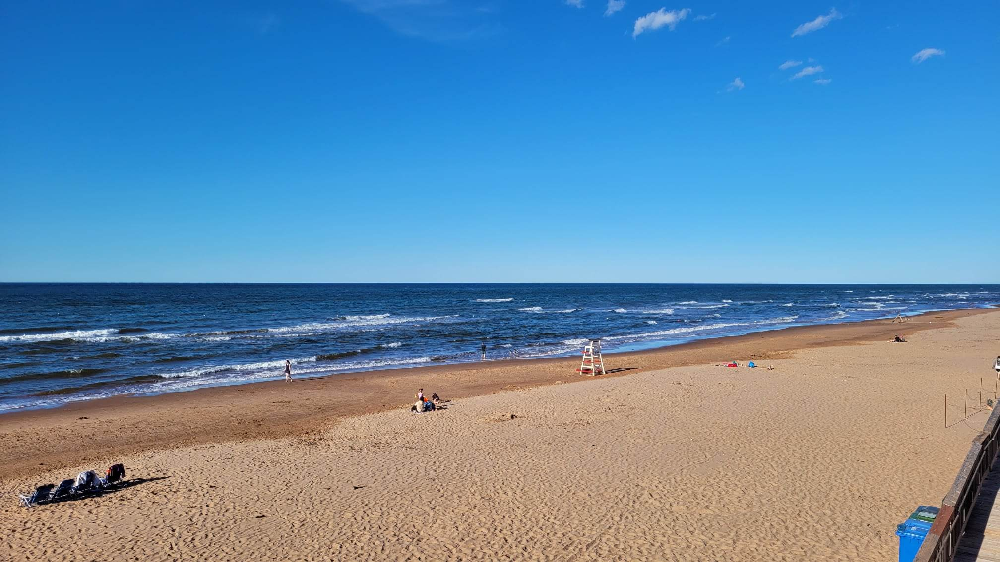 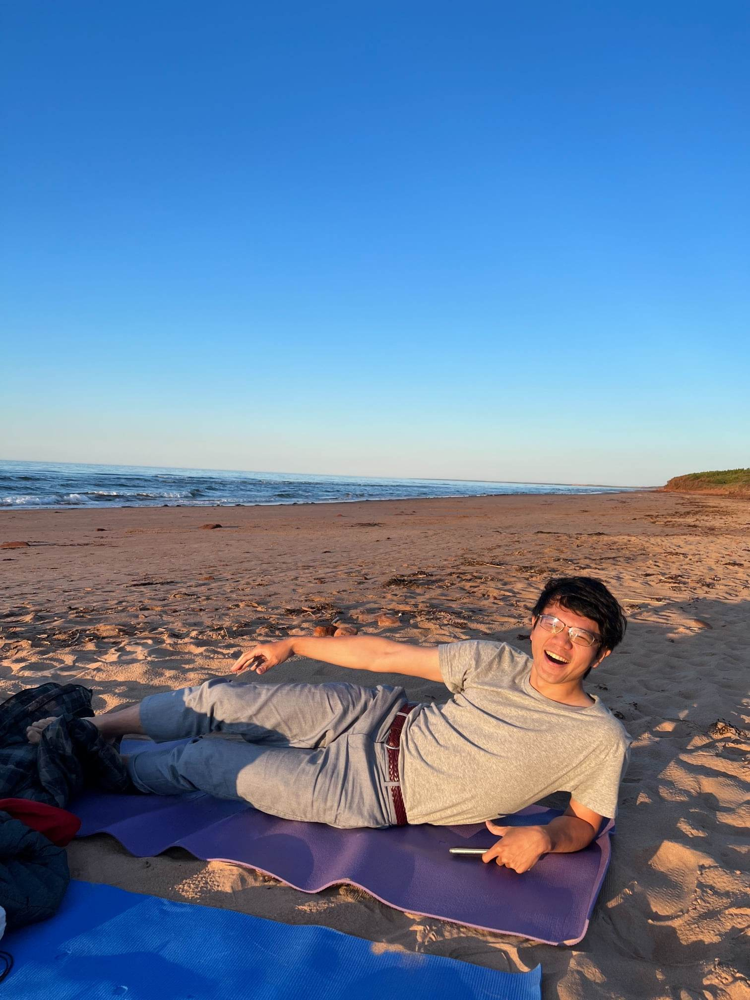 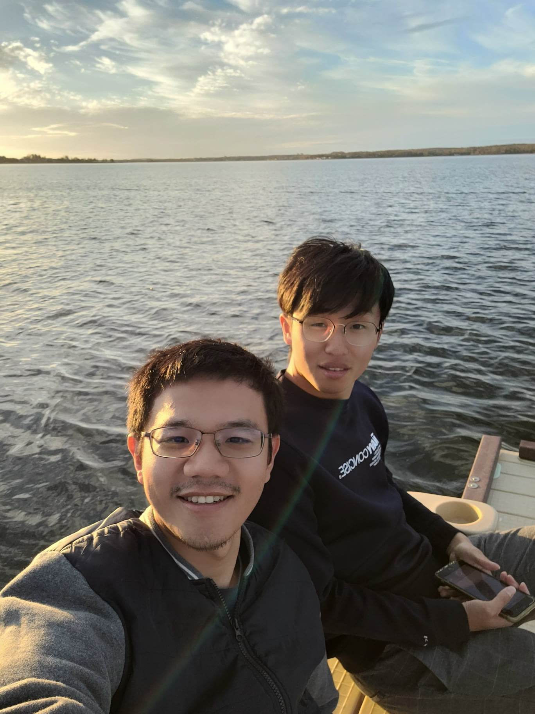Last June, also my first summer in PEI. I got a chance to join beach cleanup activity. While walking on the Stanhope beach in PEI National Park. The water was warm and transparent, but what made me more surprised was the sand. It was white, clean, and sparkling. Generally, the beach is really clean, just some waste from fisheries activities. I am glad that I could have this chance to cooperate with Park Canada to prepare clean beaches for tourists in the following traveling season.
Laying on a beach to watch sunset and star was another unforgettable thing I did in PEI. When my friend, Jason visited in June. I took him to Brackley beach to watch sunset. After the sun went down to the ocean. The sky started to be dark, and this is the moment I am waiting for. There is no light on PEI beach, so it provides a perfect place for star watching. Tens of thousands of stars were on the sky at that night. It is difficult to take the pics of that star sky via Phone Camera, it is one of the things must to do in person. If there is any other friend visited me in the future in summer, I will take them to watch stars again.
Images: watch sunset with Jason
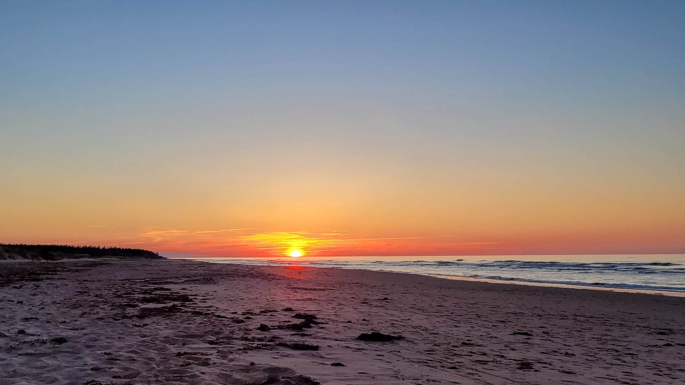 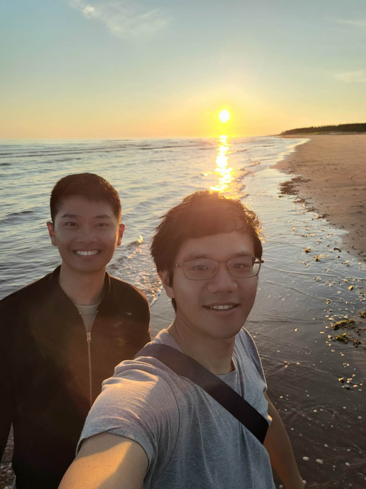
Red Sand and Potatoes
The red sand in PEI is also one of the famous island characteristics. The soil gets its characteristic red color from the high iron oxide content. PEI red sand has several properties that make it ideal for agriculture. PEI red sand is known for its high nutrient content, and this is why potatoes are so famous in PEI. Red sand is porous and allows for good drainage of water, which can help prevent issues such as waterlogging and rotting of potato crops. It is also known to have a lower risk of soil-borne diseases compared to other types of soil. This can help reduce the risk of diseases affecting potato crops, which can lead to higher yields and better-quality potatoes. I don’t eat potatoes so much before moving to PEI, but undoubtedly the potatoes here are so amazing. the taste of PEI potatoes is rich, creamy, and sweet. They are really unique to what I ate in Taiwan.
MacKenzies Brook and it was broken after Hurricane Fiona
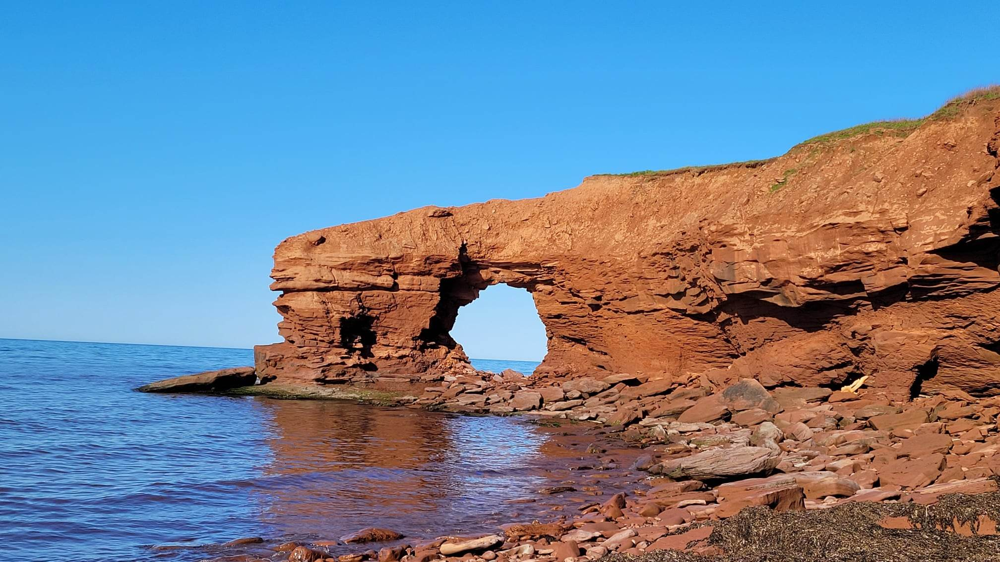 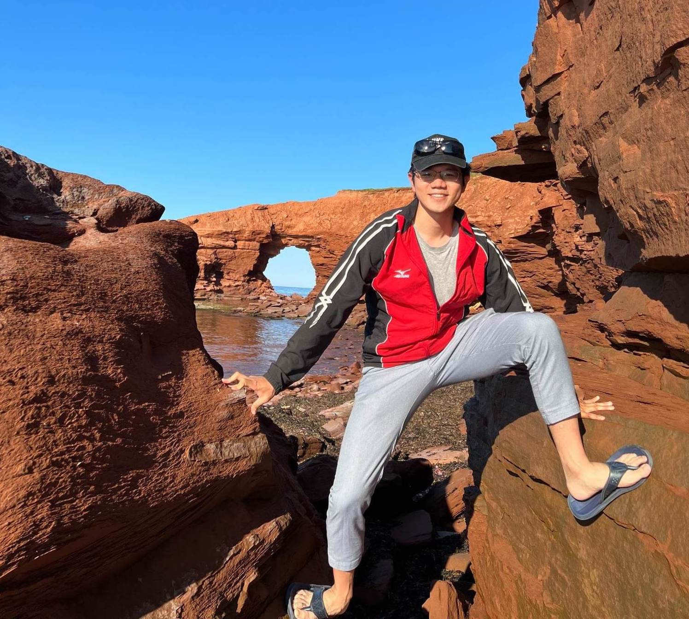 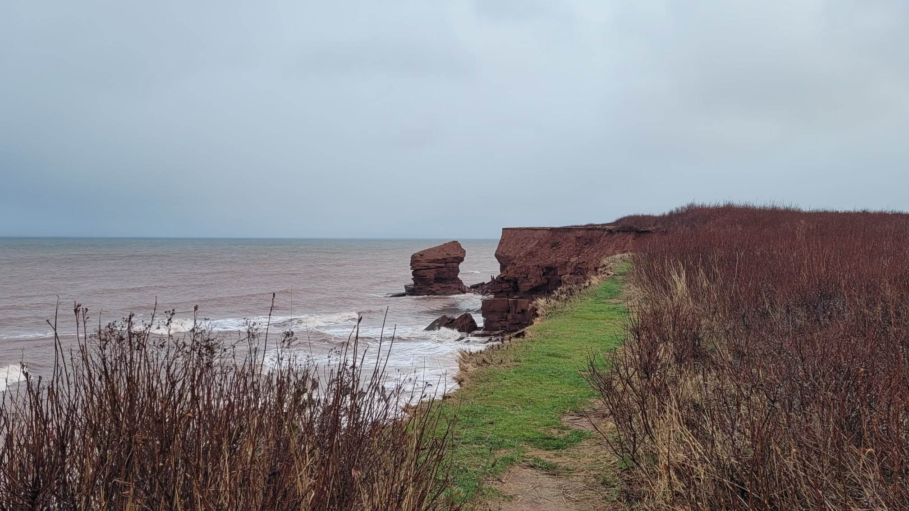Another connection with Red Sand in PEI is Cavendish in PEI National Park. Same trip with Jason. We went to the Cove in Cavendish and took some funny pictures there. It was impressive that There are many coastal terrains in PEI National Park. In Brackley and Stanhope is white sand, but we can see the red sand coast in Cavendish. The distance between these two places are only 20 minutes by car. Unfortunately, Hurricane Fiona changed many things in the North Coast severely. When I went to Cavendish again with another friends Paul in the mid of November. The Cove was gone. It made me understand how vulnerable of islands when climate change happened.
the Confederation Bridge and the connection to mainland
I still remembered my first time to visit the Confederation Bridge, which is the longest bridge in the world crossing ice-covered water. This bridge crosses of the Northumberland Strait, linking the province of Prince Edward Island (PEI) with the province of New Brunswick on the mainland. The weather on that day was still cold, around zero degree. The wind was so really strong that I thought I could be blown away. However, I still chose to get off the car, just for taking memorable pictures. This was my first time to see ice floating on the water, and thus I must take some photos to grasp that special moment no matter how cold it was.
Confederation Bridge winter and summer time and Northumberland Strait
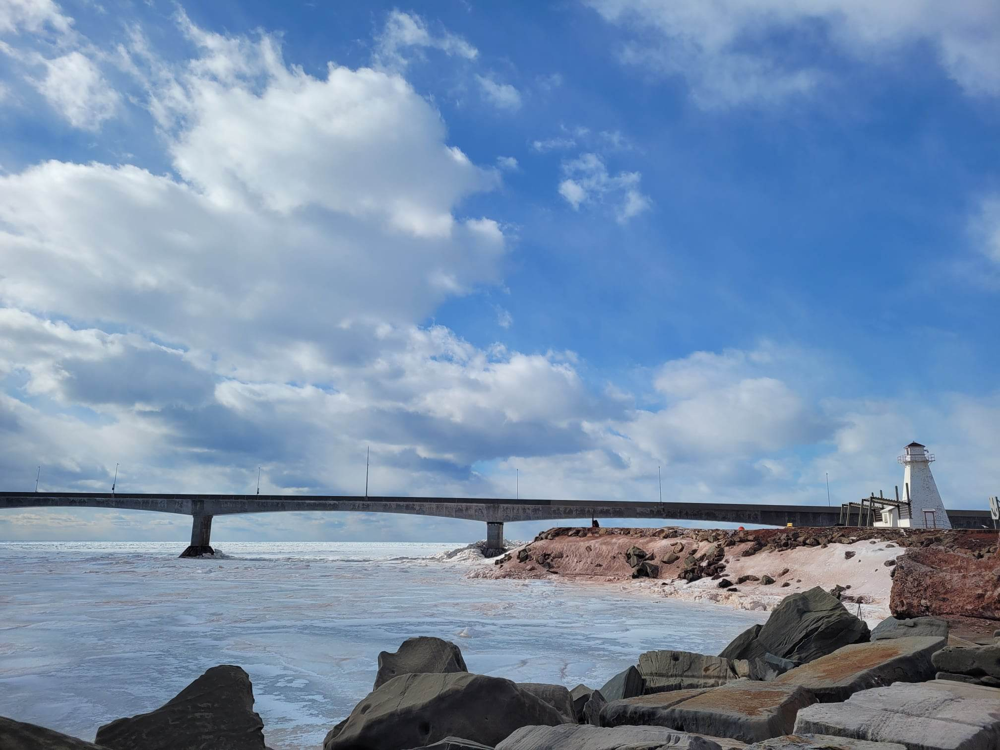 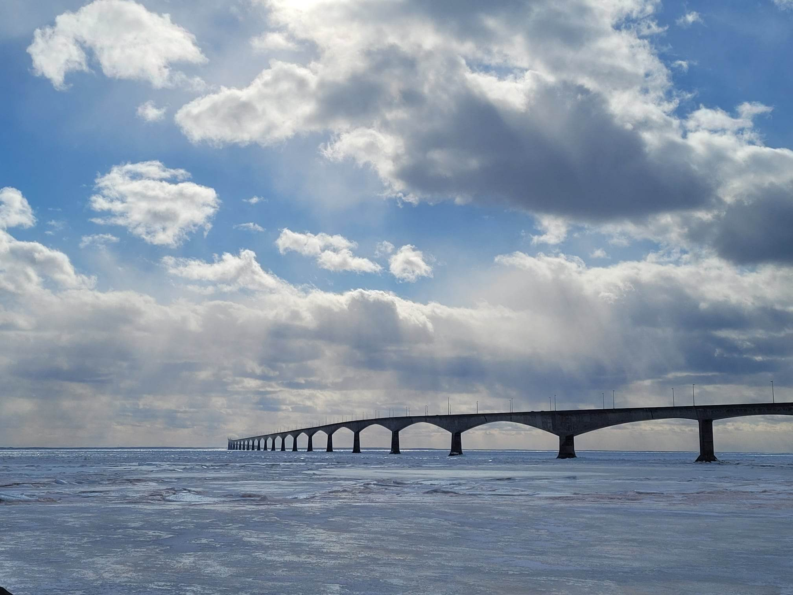 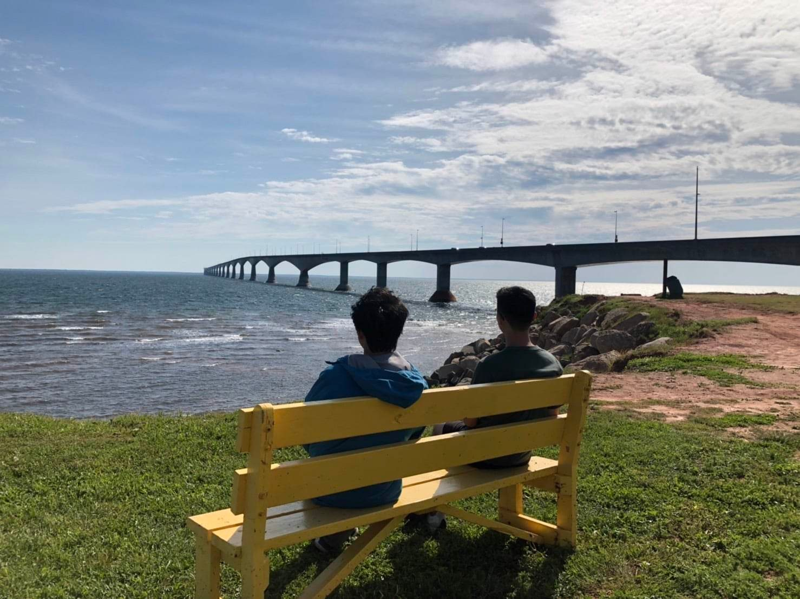Before going to the Bridge, I had no idea how importance of the bridge to PEI. I remembered there was a session about the Bridge in my first class, Themes and Perspectives in Island Studies. At that time, I could not understand why islanders were so excited that the bridge opened to traffic on May 31, 1997. The Bridge is just a transportation infrastructure, but why islander can be so emotional in that discussion? Since I visited the bridge, I could understand that feeling. Without the bridge, I could image that islanders are really isolated in the winter time. I had the same feeling for my first winter in PEI. I could feel loneliness and isolated while living in Prince Edward Island, where is no so much fun to do here in winter. I felt bored and kind of stuck on the island until I took a road trip to Halifax, and this was the chance for me to visit the Bridge in winter. After crossing the Bridge, I started to feel that I reconnected to the world. Because of the winter, the covered ice on the ocean, the freezing temperature and few friends here at that time, I felt more isolated while living in Prince Edward Island. I even asked myself why I do not live in Taiwan instead. The winter in Taiwan is warm and I have more fun things to do there. Therefore, I could understand why the bridge is so important after going through my first winter in PEI.
In the June, I got my second chance to visit the Bridge, and I went there with my Taiwanese friend, who flew from Illinois to Prince Edward Island just for visiting this beautiful island. I was like a local people and took a tourist to visit several tourist spots on the island, and the bridge is one of the top-rated spots here. I still remembered that the weather was so lovely at that day. While the wind from the Northumberland Strait kissed on my cheek from time to time. How enjoyable the live is! My friend and I sat on the bench and watched cars entering PEI one by one. It looked like retired people who enjoy their summer beside the coast. The sunshine splatters on the sea and make the blue brighter. The view of the bridge on that day was so breathtaking. I am still struggling to find a word to describe it. The feeling on that day made me understand that the season great for going to the coast is back. In other words, the tourist’s season of PEI is back, and the Bridge would take its responsibility to bring road-trip tourists to PEI. PEI became more energetic again and it was not a lonely island, which made me feel isolated in the winter.
The bridge reminds me the physical broader of an island. In the daily life, I do not go to the coast so often, and thus it is difficult to tell I am living in mainland or island. While getting close to the coast, I started to remember I am living in an island and ocean is still a physical obstacle for me to leave island by car. Fortunately, the construction of bridge can make island reconnect to mainland again, but I never have this experience before coming to PEI. Taiwan is an island as well, but the size of it is much larger than that of PEI. Therefore, I could not feel that I am actually on an island, not to mention the feeling of loneliness what I had here in the winter time. However, when I want to leave Taiwan, I need to go to the airport. Therefore, my connection of leaving an island is always an airport. By contrast, people in PEI gets a chance to leave here by car. People can drive 13 kilometers and arrive New Brunswick or even the whole Canada. This experience is new to me. The Bridge made me realize that I can go to the coast to leave an island instead of going to an airport.
Images: The first snow I had in PEI, the frozen harbour in Feb, and
Ski in the end of Feb
The snow weather was fresh in the beginning but I got depressed when it went to long
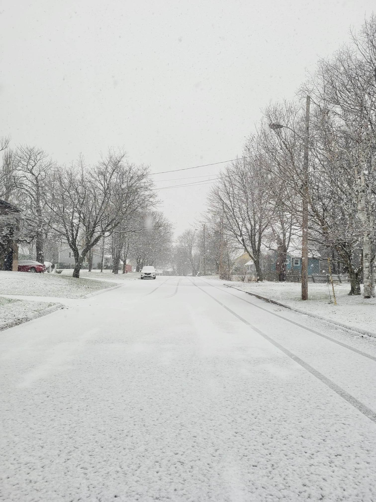 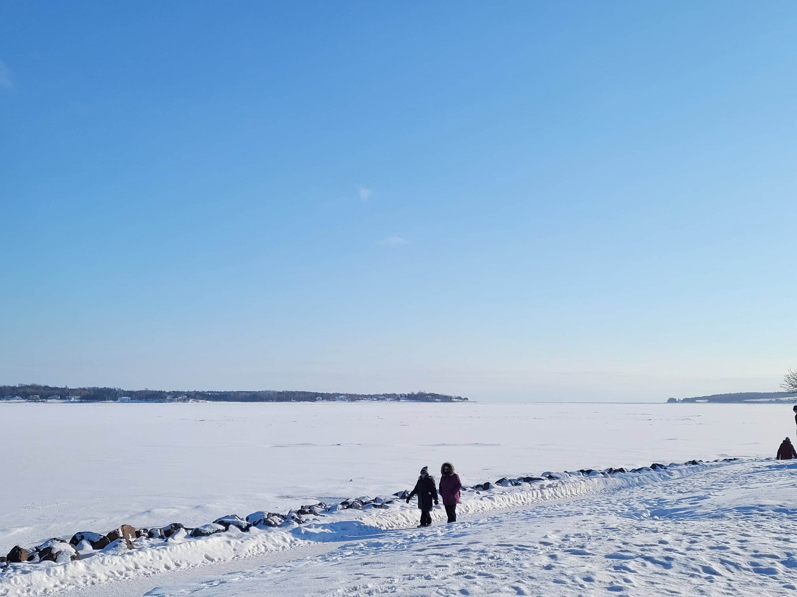 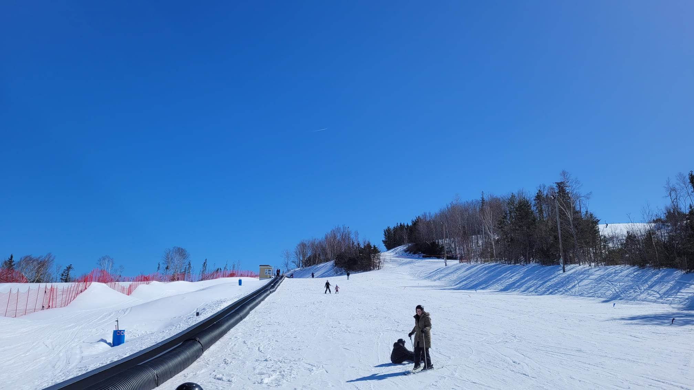Major city – Charlottetown
When my friend Paul, visiting me from London. I got a chance to give him a one-day trip, and the following is what we did in Charlottetown.
Paul is a big fan of coffee, so I took him to a café’ to start for a day. The café’ I took him to was Alambe’, the one on the Kent Street. The café’ is opened by a Vietnamese family and the owner have over 30 years’ experiences in coffee roasting and he used to be a coffee bean trader in Vietnamese before immigrating to Canada. Paul and I have been to Vietnam together three years ago, and both of us like Vietnamese coffee. This was one of the reasons I took him to Alambe’. The other reason I chose Alambe’ instead of Receiver café’ was the story of Alambe’ owner. The business owner had a great business in Vietnam, but he still chose to give up those business in Vietnam and immigrated to Canada. What he pursued was to give his children better lifestyles as well as better education. Immigration is not easy. Everything here should start from scratch, not to mention that English is still the obstacle for many immigrants. However, owing to give their children a better learning environment, those Asian families still choose to give up their good life qualities in their hometowns and come to Canada. This kind of immigration story is rare in London or big cities in Canada, such as Toronto because the costs to afford the whole family in those cities are incredibly high. Therefore, Charlottetown will be an ideal option for those Asian families and they are trying their best to integrate in PEI local lives as well as make contribution to PEI (Alam, 2022).
Images: Alambe coffee, Charlottetown Harbour and Curise ship
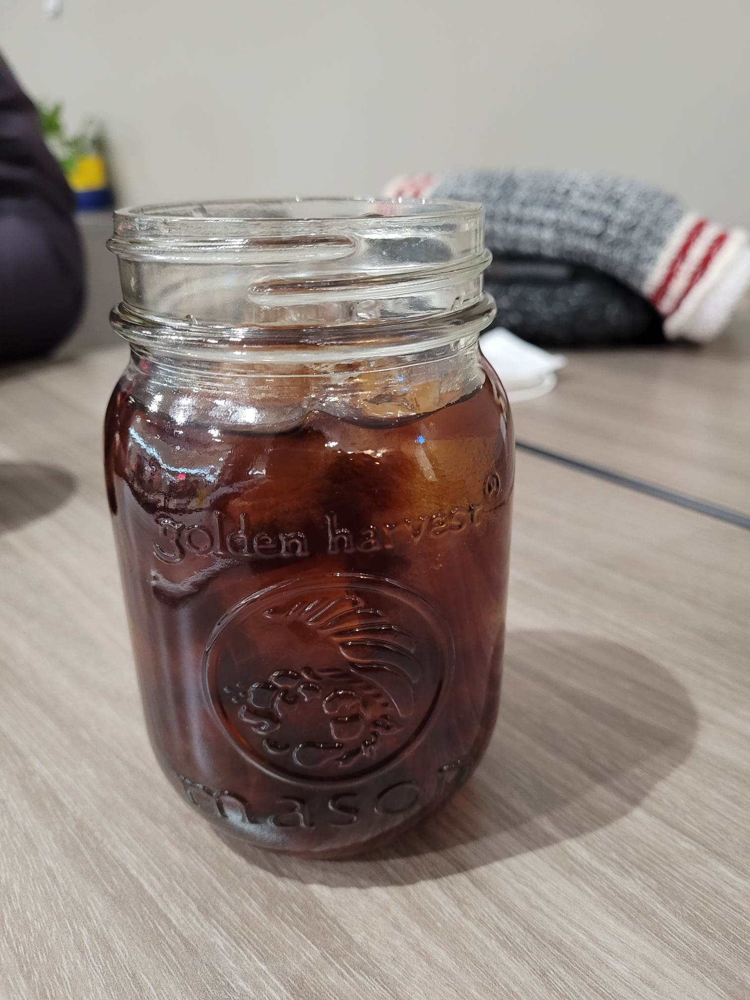 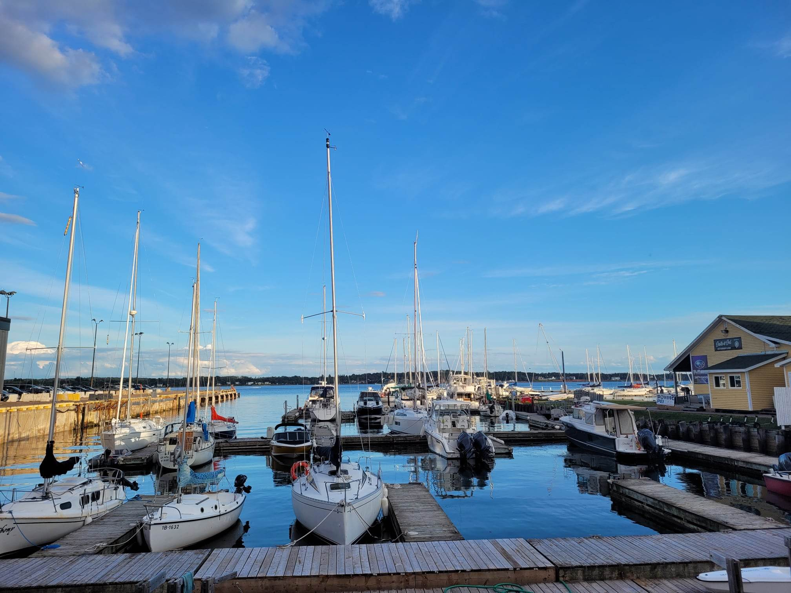 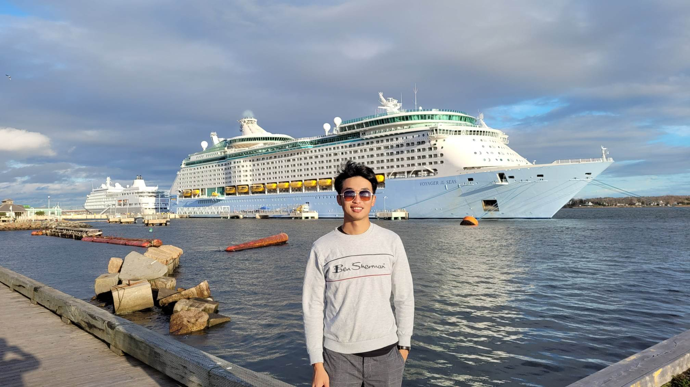After the conversation in Alambe’, I took Paul to Port Charlottetown. There were two cruises docking at Charlottetown at that day (Port Charlottetown, 2022), and thus Paul got a chance to feel the vibe of Charlottetown when cruises visit us. After taking pictures with two cruises, Paul and I walked on the boardwalk to enjoy cozy winds from ocean. We also took some pictures at 2022 display to memorize the year we travelled together in PEI. In addition to breathtaking ocean sceneries, having seafood is another to-do thing in Charlottetown (Prince Edward Island, 2022). Oysters, scallops, mussels are all delicious seafood Paul cannot miss. Because clean, cold Atlantic waters surrounding PEI (Lobster Fishers of Prince Edward Island Marketing Board, 2022), lobster is another must-ordered cuisine for Paul. One interesting thing should be mentioned is that Paul also ordered fish and chip in the seafood restaurant. He said that he wanted to compare the one here and England. According to Paul, the fish and chip in PEI was much better than that in London. As the birthplace of fish and chip (Royal Museums Greenwich, 2022), the one in London should be better, but Paul told me a totally different story. I guessed why fish and chip in PEI defeated that in London because the ingredients. PEI has the advantage of offering fresh haddock and delicious potatoes to make fish and chips (Greenway & Guenthner, 2022)
After having a big feast, we went to confederation center of the arts to understand Canadian history. At the second floor of the confederation center of the arts, there is a desk to demonstrate how representatives from colonies of British North America had the meeting in Charlottetown. When we were there, we could imagine how John Alexander Macdonald and other fathers of Canadian Confederation made the preliminary charcoal sketch in Charlottetown (Confederation Center of the Arts, 2022). After learning Canadian history, it was the time to get some dessert. Cows is nearby confederation center of the arts. After trying world’s best ice cream in PEI. Paul said the ice cream in PEI is much better than those Cow’s stores in other cities, such as Quebec. We had visited Quebec before traveling in PEI.
Images: Confederation Center of the Arts, and seafood feast
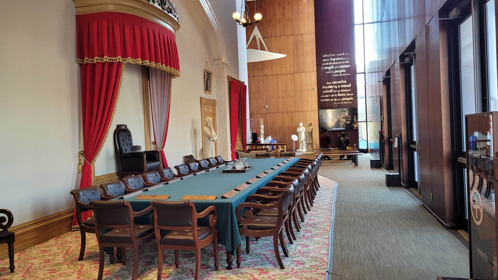 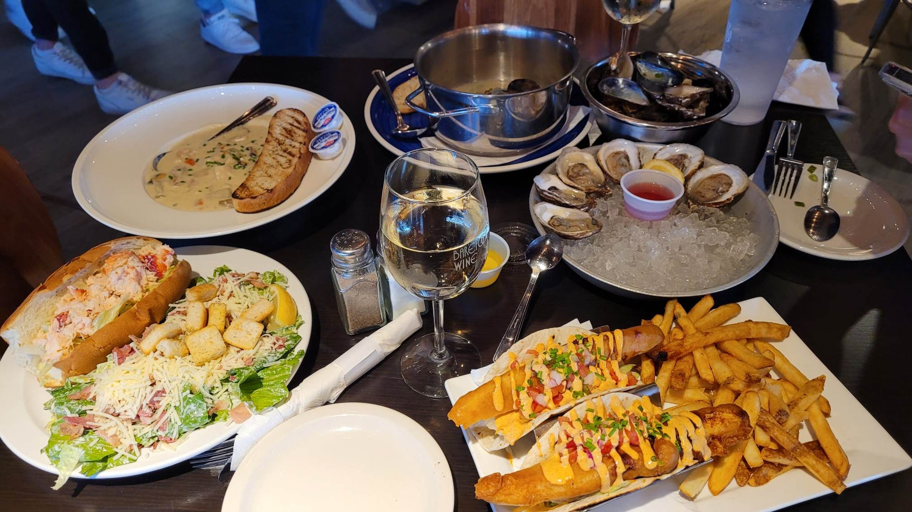 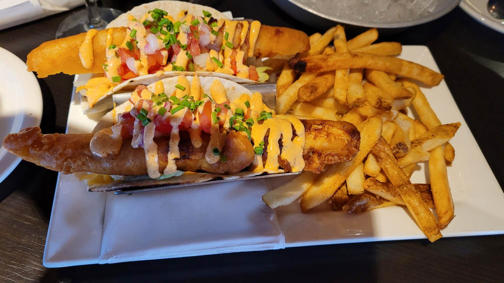After having great Chinese cuisines in DJ Wok for supper, we started to find some fun for our nightlife. After living in London for a year, grabbing a drink in bars is already a lifestyle for Paul. However, because it was the off-season for PEI, there were few restaurants opened in October. Therefore, Paul didn’t get a chance enjoy bar surfing in Charlottetown, but he did find a great bar here. The one we went is Hopyard. The distinguishing feature of this bar is the battle of the breweries. There is a competition for local breweries in Hopyard, and thus we can try different special local craft beer there.
Images: Hopeyard beer, and downtown Charlottetown
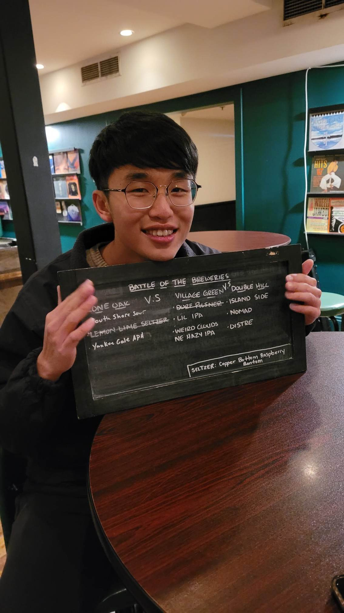 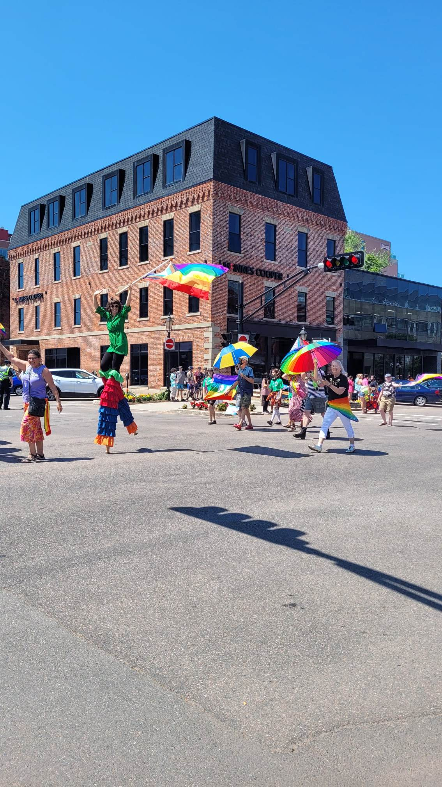 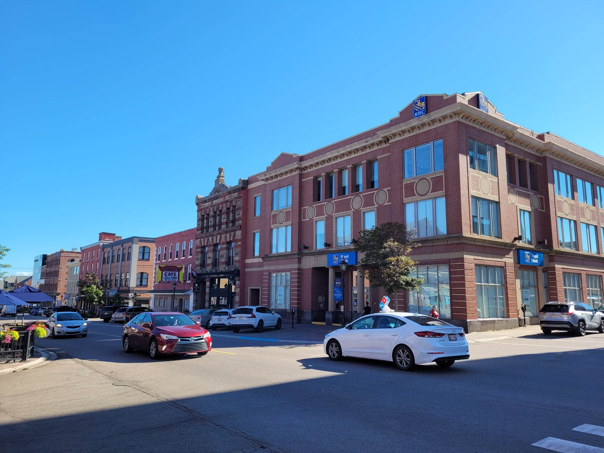After the one-day trip, Paul has shared some differences he found between U.K. and PEI. I only listed three examples here. The first one is the design of houses. Some Victorian style houses can be found in PEI, but he still could tell the difference from those in U.K. Secondly, tips culture is uncommon in U.K., and thus he was not used to it when we dined in. The last one is road design. According to his city planning perspective, Canada is a car-oriented country. The public transportation in downtown Charlottetown is still not convenient. Based on the above three observations, he thought Canada is more like United States than U.K. although Canada used to have close connection with U.K.
Traveling with Paul in Charlottetown is a funny and meaningful experience. We enjoyed the oceanic sceneries and great cuisines here as well as learnt Canadian history. At the same time, Paul got a chance to compare the life in PEI and London as well as see Canadian immigrant policies in person, and how Canada becomes a more and more diverse country, even in a city with only 40,000 population.
Reference
Alam Hina. (2022). Atlantic provinces see rapid growth in immigration,
Census figures show Social Sharing .
https://www.cbc.ca/news/canada/nova-scotia/immigrants-atlantic-provinces-growing-census-1.6630297
Confederation Center of the Arts. (2022). Province House -
Confederation Center of the Arts.
https://confederationcentre.com/heritage/the-story-of-confederation-2/province-house/
Greenway, G. A., & Guenthner, J. F. (2022). Economic considerations in
potato production. In Insect Pests of Potato (pp. 15-25). Academic
Press.
Lobster Fishers of Prince Edward Island Marketing Board. (2022).
Lobster PEI. https://lobsterpei.ca
Prince Edward Island. (2022). Culinary in Prince Edward Island.
https://www.tourismpei.com/what-to-do/culinary
Port Charlottetown. (2022c). Cruise Schedule 2022.
https://portcharlottetown.com/cruise/cruise-schedule-2022/
Royal Museums Greenwich. (2022). The History of Fish and Chips.
https://www.rmg.co.uk/stories/topics/history-fish-chips-timeline
Islandness of PEI
After living in PEI one and half year. I wanted to share how I feel about PEI. Generally, my Isandness of PEI is quietness, peace, seafood, ocean, red sand, splendid beaches and British cultures. The influence of Britain can still be found in Charlottetown. It is similar that Taiwan has kept many Chinese cultures. Quietness and peace is why I feel so comfortable while living in PEI, but if the winter went too long, It made me feel lonely instead, especially in the end of March and the early April. The spring is supposed to come, but why we still get snow during that period. At that moment, I did have a strong motivation to escape to tropical islands.